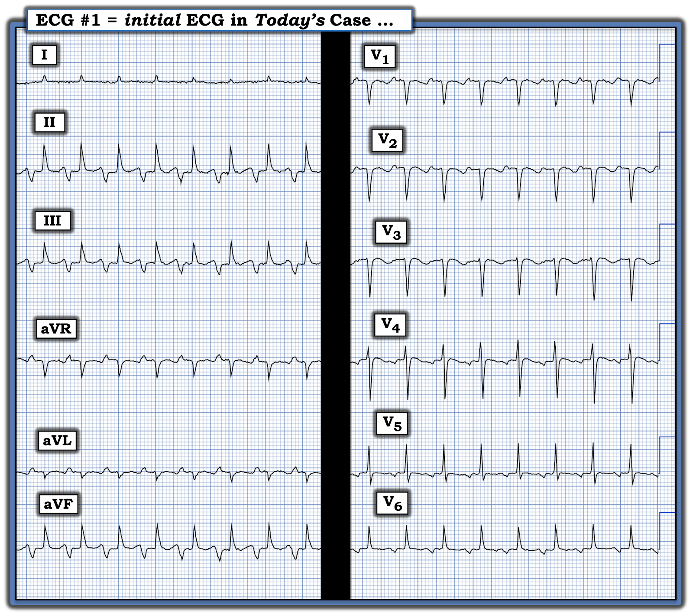
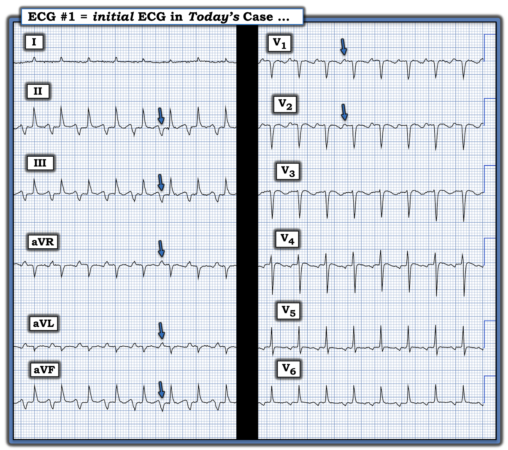
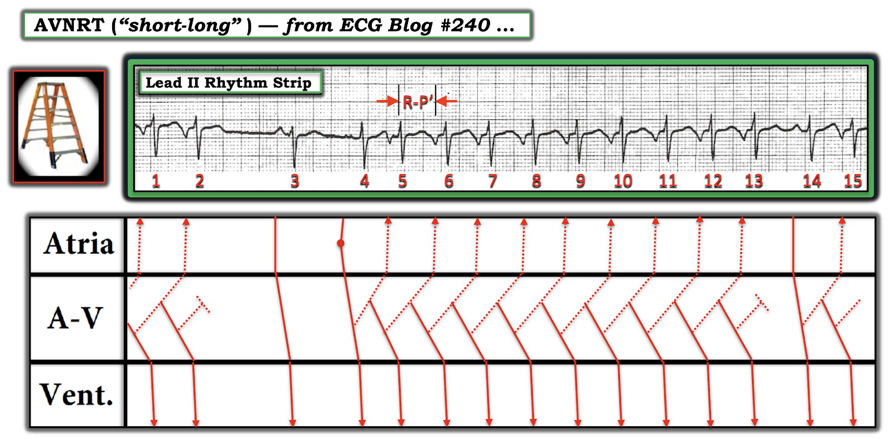
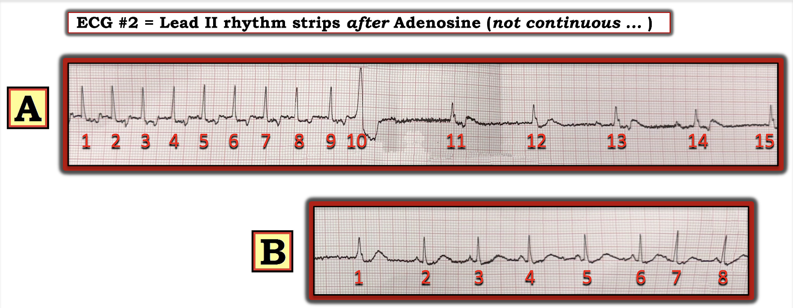
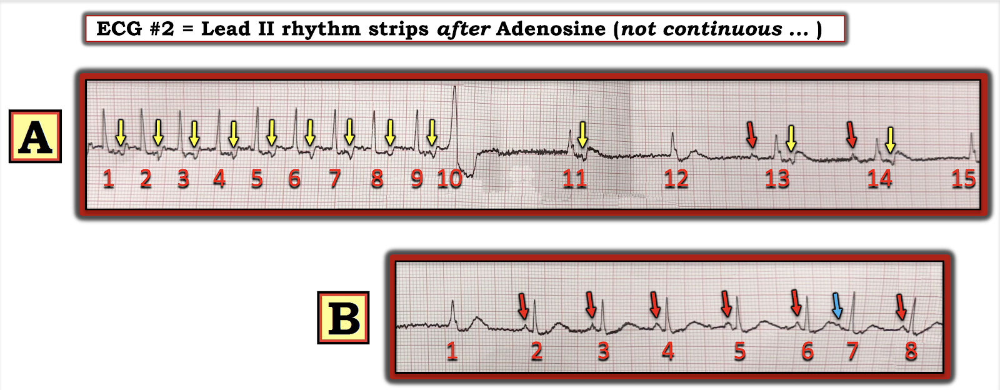
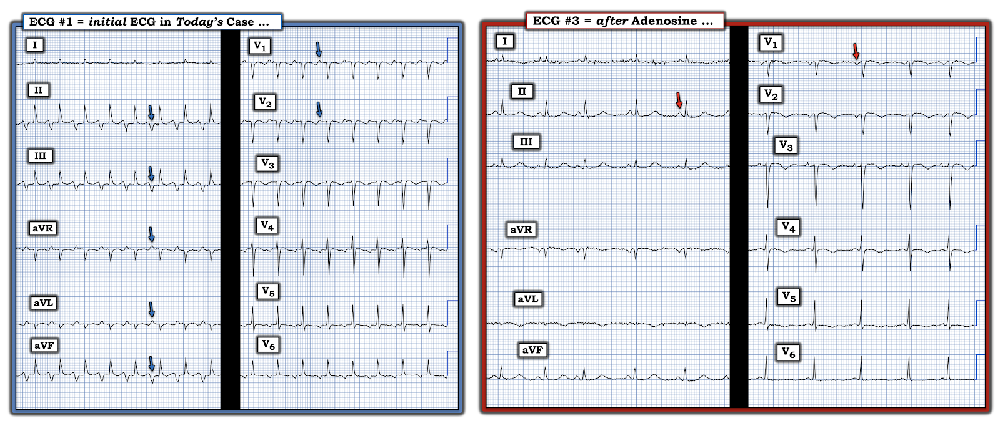

ECG Blog #446 — SVT loại gì?
Bạn được xem điện tâm đồ ở Hình-1 — chỉ được cho biết rằng bệnh nhân có một cơn nhịp nhanh “liên tục".
CÂU HỎI:
- BẠN sẽ diễn giải điện tâm đồ ở Hình-1 như thế nào?
- Chẩn đoán phân biệt là gì? — Điều trị ra sao?


SUY NGHĨ CỦA TÔI về điện tâm đồ ở Hình-1:
Nhịp ở Hình-1 — là một SVT đều (nhịp nhanh trên thất — SupraVentricular Tachycardia) với tần số ngay dưới 150/phút, không có dấu hiệu rõ ràng của sóng P xoang (tức là, không có sóng P dương ở chuyển đạo II).
- QRS hẹp ở cả 12 chuyển đạo — đó là lý do chúng ta biết đây là một nhịp trên thất.
- Mặc dù không có sóng P xoang — vẫn có hoạt động nhĩ dưới dạng một biến dạng âm nằm ở một khoảng cách cố định so với QRS ở mỗi chuyển đạo thành dưới (các mũi tên XANH LAM ở Hình-2).


ĐIỂM THEN CHỐT (PEARL) #1: 3 vấn đề chính cần cân nhắc về bản chất của hoạt động nhĩ được đánh dấu bằng các mũi tên XANH LAM ở Hình-2 là: i) Liệu các biến dạng âm sâu xuất hiện trước QRS ở mỗi chuyển đạo trong 3 chuyển đạo thành dưới này có phải là sóng P ngược dòng, được dẫn truyền ngược lại từ phức bộ QRS đứng trước hay không; — ii) Hay, các biến dạng âm ở chuyển đạo thành dưới này là sóng P dẫn truyền xuôi từ một ổ nhĩ lạc chỗ; — hoặc, iii) Các biến dạng này có phải là nhịp nhanh bộ nối không?
- Tùy theo khả năng nào ở trên là cơ chế thực sự — chẩn đoán phân biệt của nhịp ở điện tâm đồ #1 sẽ nằm giữa: i) Một nhịp SVT do vào lại kèm dẫn truyền nhĩ ngược dòng; ii) ATach (nhịp nhanh nhĩ — Atrial Tachycardia); — hoặc — iii) Nhịp nhanh bộ nối.
- Có vẻ như trong ca hôm nay, nhịp nhanh bộ nối tự động là khả năng ít xảy ra nhất trong 3 khả năng trên — vì khoảng PR của các biến dạng âm trước QRS ở mỗi chuyển đạo thành dưới dài hơn khoảng PR rất ngắn mà tôi mong đợi nếu đây là nhịp nhanh bộ nối.
- Nhưng — các biến dạng được đánh dấu bằng mũi tên XANH LAM ở Hình-2 chắc chắn có thể là một ATach lạc chỗ.
ĐIỂM THEN CHỐT (PEARL) #2:
Dẫn truyền nhĩ ngược dòng được nhận biết bằng sóng P âm ở các chuyển đạo thành dưới (do dẫn truyền đi ra xa tâm thất — và ngược trở về tâm nhĩ). Dẫn truyền ngược dòng như vậy thường tạo ra sóng P dương ở các chuyển đạo aVR, aVL, V1, và đôi khi ở chuyển đạo V2 (Xem các mũi tên XANH LAM ở từng chuyển đạo này trong Hình-2).
- Dù đã nói như trên — chúng ta vẫn không thể loại trừ khả năng cơ chế của nhịp ở Hình-2 là một ATach lạc chỗ.
- Vấn đề các nhịp SVT do vào lại đã được bàn chi tiết trong ECG Blog #240. Trong bài tổng quan đó, tôi đã nhấn mạnh rằng dạng SVT vào lại phổ biến nhất là AVNRT thể "chậm-nhanh", trong đó dẫn truyền xuôi đi qua đường chậm hơn trong nút AV — và vòng vào lại được khép kín bằng dẫn truyền ngược về tâm nhĩ qua đường nhanh hơn trong nút AV. Chính vì dẫn truyền ngược dòng này (trở về tâm nhĩ) đi qua đường nhanh hơn trong nút AV — nên sóng P ngược dòng xuất hiện rất gần phức bộ QRS đứng trước (hoặc bị ẩn, vì nằm lẫn trong phức bộ QRS đứng trước — hoặc với khoảng RP' rất ngắn, khi sóng P ngược dòng tạo khía ở phần cuối QRS đứng trước).
- Ngược lại — khi một phần của vòng vào lại được tạo bởi một AP (đường phụ — Accessory Pathway) — sóng P ngược dòng thường biểu hiện với khoảng RP' dài vừa phải (xuất hiện khá xa sau QRS — thường nằm trong phần sau của đoạn ST). Việc một phần đường phụ tham gia vào vòng vào lại của một nhịp SVT tạo thành AVRT. Khoảng RP' dài vừa phải — vì cần nhiều thời gian hơn để hoàn tất vòng vào lại này, vốn dài hơn vòng vào lại trong AVNRT nằm trọn bên trong nút AV.
Điều đang xảy ra trong ca hôm nay thì khác.
- NẾU các mũi tên XANH LAM ở Hình-2 là dẫn truyền nhĩ ngược dòng — thì khoảng RP' rất dài (chiếm hơn hẳn một nửa khoảng R-R). Do đó, nếu các mũi tên XANH LAM là sóng P ngược dòng — thì nhịp này sẽ là dạng không điển hình (và ít gặp hơn nhiều) của AVNRT, được gọi là thể "nhanh-chậm" (với dẫn truyền xuôi qua đường nhanh hơn trong nút AV — và vòng vào lại được khép kín bằng dẫn truyền ngược về tâm nhĩ qua đường chậm hơn trong nút AV).
- ĐIỀU CỐT LÕI: Chẩn đoán phân biệt chủ yếu của nhịp SVT đều trong ca hôm nay là giữa: i) AVNRT không điển hình thể "nhanh-chậm"; — với — ii) ATach lạc chỗ.
ĐIỂM THEN CHỐT (PEARL) #3: Phân biệt giữa AVNRT không điển hình thể "nhanh-chậm" với ATach lạc chỗ có thể khó nếu chỉ dựa trên một điện tâm đồ duy nhất. Mặc dù trong ca hôm nay — tôi cho rằng hình dạng của đoạn ST, cùng sóng P âm rất sâu ở mỗi chuyển đạo thành dưới gợi ý nhiều hơn đến AVNRT không điển hình — nhưng đôi khi chỉ có thể phân biệt 2 thực thể này bằng thăm dò điện sinh lý (EP).
- Hãy tìm “Lúc khởi phát” (và/hoặc Lúc kết thúc) của nhịp! — Manh mối MẤU CHỐT về nguyên nhân của một SVT thường nằm ở việc ghi lại được hoặc lúc bắt đầu và/hoặc lúc kết thúc của SVT.
- ATach thường khởi phát từ từ, với sự tăng tốc dần của ổ lạc chỗ (tức là, hiện tượng “khởi động” (warm-up)). Sau đó, nhịp có thể chậm dần (tức là, “hạ nhiệt” (cool-down)) khi kết thúc.
- Ngược lại — các nhịp SVT vào lại thường bắt đầu bằng 1 hoặc nhiều PAC bị blốc dẫn truyền xuống một trong các đường của nút AV. Điều này lập tức thiết lập vòng vào lại, khi xung động bắt đầu đi xuống đường kia. Do đó — khởi phát của một SVT vào lại thường đột ngột (tức là, điều này giải thích thuật ngữ trước đây dùng để gọi nhịp này = PSVT = SVT kịch phát — Paroxysmal SVT). Sự kết thúc của các nhịp SVT vào lại cũng thường nhanh (dù có thể diễn ra qua vài nhát).
- Đáng tiếc là trong ca hôm nay — lúc khởi phát của SVT đều ở Hình-2 không được ghi lại, nên chúng ta không có được manh mối quan trọng này.
- LƯU Ý: Dù mục tiêu của chúng ta là đưa ra chẩn đoán nhịp chính xác nhất có thể — "tin tốt" là về mặt thực hành — các biện pháp chẩn đoán và/hoặc điều trị ban đầu ngoài hiện trường hoặc tại khoa cấp cứu (ED) đối với một nhịp SVT đều chưa phân định là tương tự nhau (tức là, cân nhắc nghiệm pháp cường phế vị — và/hoặc dùng một thuốc ức chế nút AV như Verapamil/Diltiazem; thuốc chẹn ß, và có thể Adenosine).
==========================
Điều gì xảy ra trong AVNRT "Nhanh-Chậm"?
Để minh họa cơ chế của AVNRT không điển hình thể "nhanh-chậm" — tôi trình bày dưới đây ở Hình-3 giản đồ bậc thang (laddergram) đã được bàn trong ECG Blog #240.
- Bắt đầu với sóng P dẫn truyền từ xoang bình thường ( = nhát #3) — tiếp theo là một PAC ( = nhát #4, được nhận biết là PAC vì hình dạng sóng P của nó khác với sóng P xoang đứng trước nhát #3).
- Về mặt cơ chế — nếu PAC này ( = nhát #4) đến nút AV vào đúng thời điểm — nó có thể gặp đường chậm trong nút AV vào lúc đường chậm này có thể dẫn truyền ngược dòng (đường chấm chấm ở tầng nút AV của giản đồ bậc thang dẫn truyền ngược về tâm nhĩ).
- Và — nếu dẫn truyền ngược dòng qua đường chậm xảy ra vào đúng thời điểm — nó có thể gặp đường nhanh trong nút AV vào lúc đường này đã có thể dẫn truyền xuống tâm thất.
- Ở Hình-3 — các sự kiện này khởi phát một SVT vào lại thể "nhanh-chậm" cho các nhát từ #4 đến 13. SVT vào lại này dừng lại sau nhát #13 — vì nhát cuối cùng trong loạt này không dẫn truyền ngược dòng! (tức là, Không có sóng P âm nào sau nhát #13).
- Nhịp xoang sau đó trở lại với nhát #14 — nhưng chỉ kéo dài được 1 nhát, vì dẫn truyền ngược dòng của nhát #14 có khả năng khởi phát một loạt SVT khác bắt đầu từ nhát #15 (mà chúng ta không thấy — vì dải nhịp kết thúc ở đây).
- Bây giờ, nếu quay lại phần đầu của nhịp ở Hình-3 — có vẻ như một loạt AVNRT "nhanh-chậm" khác vừa mới kết thúc ngay trước nhát #3.
- T.B. (P.S.) — Lưu ý rằng dẫn truyền ngược dòng từ nhát #4 hơi nhanh hơn (tức là, với khoảng RP' hơi ngắn hơn) so với dẫn truyền ngược dòng của tất cả các nhát khác trên bản ghi này. Liệu điều này phản ánh sự chuyển từ một đường của nút AV sang đường khác — hay đơn giản chỉ là dẫn truyền ngược dòng chậm lại sau nhát đầu tiên thì chưa chắc chắn, và không làm thay đổi nhận định rằng dẫn truyền ngược dòng chậm (tức là, với khoảng RP' dài) là "cơ chất" cho sự khởi phát và duy trì AVNRT nhanh-chậm ở bệnh nhân này.
- ĐIỂM THEN CHỐT (PEARL) #4: Dạng AVNRT "nhanh-chậm" ít gặp hơn này, được minh họa ở Hình-3 — còn được biết đến là một nhịp nhanh "dai dẳng liên tục" (incessant). Tên gọi này phản ánh thực tế rằng dạng AVNRT không điển hình này thường khó điều trị do xu hướng đáng lo ngại là hay tái phát và kéo dài một khi vòng vào lại đã khởi động. Có lẽ, dẫn truyền ngược dòng chậm hơn về tâm nhĩ (tạo ra khoảng RP' rất dài) — cho phép có nhiều thời gian hơn (và nhiều cơ hội hơn) để dẫn truyền xuôi xuống đường nhanh hơn xảy ra — và một khi điều này xảy ra, nó có xu hướng duy trì vòng vào lại. (Ngược lại — sự tái phát "dai dẳng liên tục" của SVT vào lại ít có khả năng xảy ra hơn với dạng AVNRT "chậm-nhanh" điển hình, trong đó khoảng RP' ngắn hơn tạo ít cơ hội hơn để vòng vào lại được duy trì).


BÌNH LUẬN CỦA TÁC GIẢ: Những chi tiết phức tạp của các nhịp SVT vào lại là một chủ đề khó mà tôi đã đơn giản hóa để giúp hiểu được về mặt thực hành.
- Để có phân tích chuyên sâu hơn: Xem Katritsis và Josephson — Arrhythm Electrophys Rev 5(2):130-135, 2016.
- Các liên kết bổ sung dễ đọc hơn — Cadogan — Life-In-The-Fast-Lane, 2022 — và — Hafeez và Armstrong — StatPearls, 2023.
==========================
Ca bệnh Tiếp diễn:
- Nhịp trong ca hôm nay đã được điều trị bằng Adenosine. Cuối cùng nó đáp ứng với Verapamil tiêm tĩnh mạch liều cao.
- Thăm dò điện sinh lý (EP) xác nhận cơ chế của nhịp hôm nay là AVNRT thể "nhanh-chậm". Đáng tiếc là — không có thêm thông tin theo dõi.
- Cân nhắc các lựa chọn lâm sàng nếu chúng ta là người điều trị bệnh nhân này — có thể cho bệnh nhân thử dùng lâu dài một thuốc ức chế nút AV (tức là, Verapamil hoặc Diltiazem đường uống; và/hoặc thuốc chẹn ß) — nhưng nếu không thành công (như thường gặp với AVNRT thể nhanh-chậm) — có thể có chỉ định chuyển đến chuyên khoa điện sinh lý tim để cân nhắc triệt đốt.
==============================
Tôi có nhận được 2 dải nhịp ngắn ở Hình-4 — được ghi sau khi bệnh nhân hôm nay được tiêm tĩnh mạch Adenosine.
CÂU HỎI:
- BẠN thấy gì?
- Các dải nhịp này có phù hợp với cơ chế của AVNRT nhanh-chậm mà tôi minh họa ở Hình-3 không?


==============================
TRẢ LỜI = Hình-5:
Tôi không chắc các dải nhịp ở Hình-5 được ghi bao lâu sau khi tiêm tĩnh mạch Adenosine. LÝ TƯỞNG NHẤT: Nên luôn luôn ghi một dải nhịp liên tục trong 60-90 giây sau khi tiêm tĩnh mạch Adenosine (vì đây là cách TỐT NHẤT để ghi lại giai đoạn chẩn đoán then chốt do thuốc này tạo ra).
- 9 nhát đầu tiên ở Ô A của Hình-5 cho thấy một nhịp SVT vào lại với tần số ~135/phút, với khoảng RP' khá dài (các mũi tên VÀNG theo sau 9 nhát đầu tiên này). Lưu ý SVT hơi chậm lại ở các nhát #8 và 9.
- Nhát #10 là một PVC — sau đó có một khoảng ngưng ngắn.
- Nhát #11 là một nhát thoát trên thất — vì không có sóng P xoang đứng trước. Tuy nhiên có một sóng P ngược dòng (mũi tên VÀNG) theo sau nhát #11 — nhưng lưu ý rằng khoảng RP' sau nhát này ngắn hơn so với trong loạt AVNRT 9 nhát (Việc khoảng RP' đang ngắn lại thấy rõ nhất khi so sánh các khoảng RP' dài hơn hẳn sau các nhát #1 và 2 — với khoảng RP' ngắn hơn này sau nhát #11).
- Nhát #12 là một nhát thoát trên thất khác. Lưu ý rằng không có sóng P ngược dòng nào theo sau nhát này.
- Dẫn truyền xoang trở lại với các nhát #13 và 14 (mũi tên ĐỎ) — cả hai nhát dẫn truyền từ xoang này đều được theo sau bởi sóng P ngược dòng với khoảng RP' ngắn hơn so với lúc đầu loạt AVNRT ở các nhát #1 và 2.
- Ở Ô B — Bây giờ chúng ta thấy nhịp xoang bình thường với tần số phù hợp hơn, nhưng lúc này không còn dẫn truyền ngược dòng!
- Nhát #7 là một PAC (xuất hiện sớm hơn dự kiến — và có sóng P hình dạng khác đứng trước, như mũi tên XANH LAM chỉ ra). Như đã trình bày ở Hình-3 — khởi phát của các nhịp SVT vào lại thường được thúc đẩy bởi một hoặc nhiều PAC, vốn tạo điều kiện cho khả năng dẫn truyền ngược dòng khởi phát và duy trì vòng vào lại.
Tổng hợp lại tất cả:
2 dải nhịp ngắn này kể lại câu chuyện về cách Adenosine tiêm tĩnh mạch đã chuyển thành công AVNRT nhanh-chậm trong ca hôm nay về nhịp xoang:
- 9 nhát đầu tiên cho thấy sự khởi đầu của việc chậm lại của AVNRT ở bệnh nhân này (vốn đã kéo dài như thấy ở Hình-1 với tần số gần 150/phút hơn). Ngoài việc tần số SVT vào lại chậm lại — bạn thường sẽ thấy xuất hiện một chút không đều trong nhịp vốn đều trước đó (như chúng ta thấy ở Ô A).
- Bạn thường sẽ thấy một vài nhát thất (như nhát #10) khi Adenosine đang có tác dụng. Tiếp theo thường là một loạt nhát thoát — khi nhịp xoang trở lại.
- Như đã nhấn mạnh trước đó — chính khoảng RP' dài là đặc trưng (và là yếu tố duy trì) của dạng AVNRT nhanh-chậm không điển hình này. 2 dải nhịp này cho thấy tác dụng của Adenosine làm giảm khoảng RP', và cuối cùng làm chấm dứt dẫn truyền ngược dòng.
- Nhịp xoang bình thường đã trở lại ở Ô B. PAC (nhát #7) không còn khởi phát một loạt SVT vào lại — vì nút AV không còn cho phép dẫn truyền ngược dòng.


KẾT LUẬN CA BỆNH:
Như thấy ở Hình-5 — Adenosine đã chuyển nhịp trong ca hôm nay. Nhưng do thời gian bán thải cực ngắn của Adenosine — nhịp AVNRT nhanh-chậm "dai dẳng liên tục" cứ tái phát cho đến khi các liều Verapamil tiêm tĩnh mạch lặp lại giúp duy trì được nhịp xoang.
- Hình-6 — cho thấy khi ghi điện tâm đồ #3 — nhịp xoang đã trở lại. Các mũi tên màu làm nổi bật sự thay đổi hình dạng sóng P giữa 2 bản ghi.


==========================================
Lời cảm ơn: Xin cảm ơn Kenneth Khoo (từ Malasia) đã chia sẻ ca bệnh và bản ghi này.
==========================================

================================
Các bài ECG Blog liên quan đến ca hôm nay:
- ECG Blog #185 — Ôn lại Cách tiếp cận Ps, Qs & 3Rs để đọc nhịp một cách hệ thống.
- ECG Blog #188 — Ôn lại những điều cốt yếu để đọc (và/hoặc vẽ) Giản đồ bậc thang (laddergram), kèm LIÊN KẾT tới rất nhiều giản đồ bậc thang tôi đã vẽ và bàn chi tiết trong các bài blog khác.
- ECG Blog #229 — Vì sao cuồng nhĩ (AFlutter) lại hay bị bỏ sót đến vậy?
- ECG Blog #137 — Cuồng nhĩ với tỷ lệ dẫn truyền bất thường.
- ECG Blog #138 — Cuồng nhĩ với nhịp nhanh nhĩ.
- ECG Blog #40 — Một SVT đều khác hóa ra là cuồng nhĩ.
- González-Torrecilla và cs. điểm lại cách phân biệt AVNRT với AVRT — trong Ann Noninvasive Electrocardiol 16(1):85-95, 2011 .
Các trang khác nơi tôi đã bàn về những ca tương tự:
- Bài đăng ngày 6 tháng 3 năm 2020 trên Dr. Smith's ECG Blog.
- Bài đăng ngày 31 tháng 10 năm 2016 trên Dr. Smith's ECG Blog.
- Bài đăng ngày 16 tháng 10 năm 2019 trên Dr. Smith's ECG Blog.
- Mời xem bài đăng ngày 12 tháng 11 năm 2019 trên Dr. Smith's ECG Blog — trong đó tôi đã điểm lại ca một dạng nhịp SVT đều khác (cuồng nhĩ).